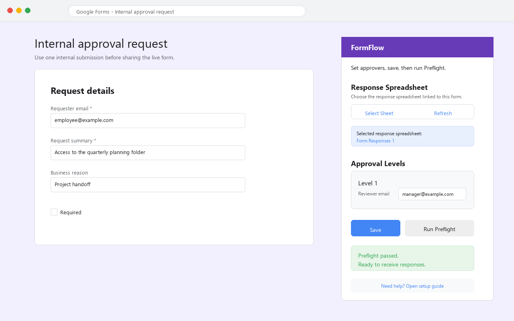
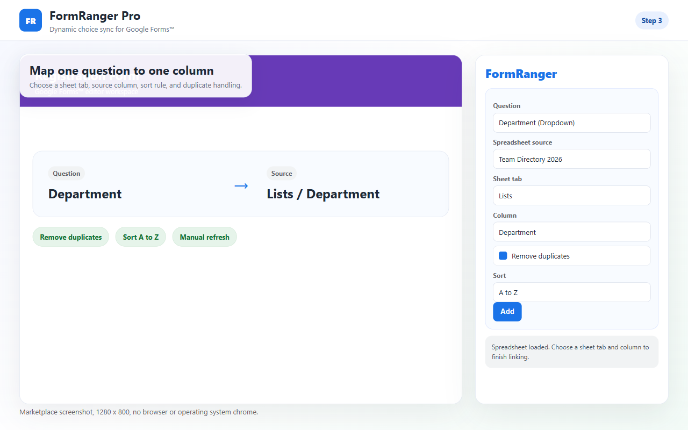

Approvals · 1,000+ installs
Approve or reject a Google Forms response
FormFlow emails one reviewer and writes the decision to the linked response Sheet.
Install FormFlow
Use FormFlow when a Google Forms response needs an approve or reject email and a status on the linked Sheet. Use Choice Sync when the form's choices should come from a Google Sheets column.
FormFlow emails one reviewer and writes the decision to the linked response Sheet.
Install FormFlow
Use Choice Sync when dropdown, checkbox, multiple-choice, or grid choices should refresh from a selected Sheets column.
Install Choice SyncRun the copied-form Alpha/Beta test
FormGuard, FormNotifier, FormMerge, and DocForge are on More tools. For a spreadsheet formula, use Sheet Formula Helper.